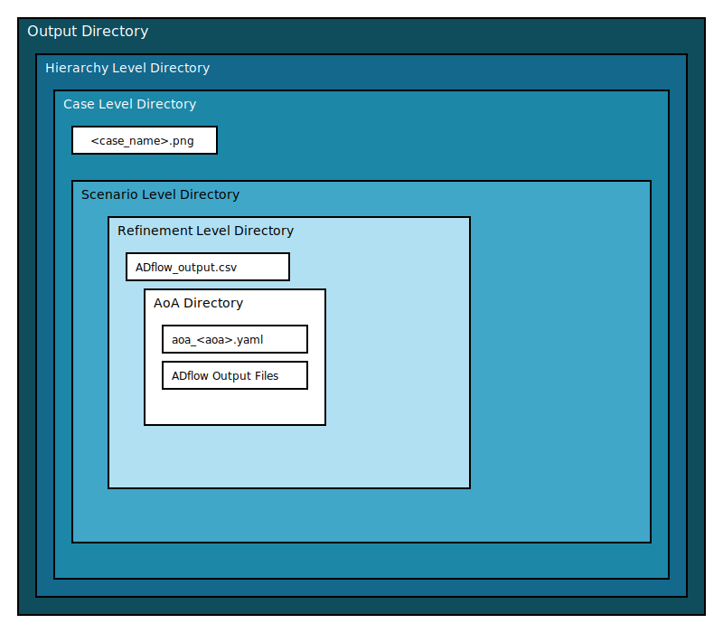

Outputs
The mdss package organizes simulation results into a structured
directory hierarchy. This hierarchy mirrors the simulation setup defined
in the YAML file.
Structure of the Output Directory
{kind=link}
File Types
CSV Files:
Stored in Refinement Level directory
Contain simulation data, including:
Coefficient of Lift (CL)
Coefficient of Drag (CD)
Wall Time
YAML Files:
Two types:
Per-case YAML files (
aoa_<aoa>.yaml) stored in each AoA directory.A summary YAML file (
overall_sim_info.yaml) for the entire simulation in the output directory.
PNG Files:
Comparison plots of experimental vs. simulated data, generated using
gen_case_plots()are stored in the corresponding case level directory.Comparison plots generated using
compare_scenarios()are stored in the user specified output directory
Miscellaneous:
Additionally, the following files are stored in the output directory:
A copy of the input yaml file.
A python script that will be used for subprocess.
A job script when running on HPC.
Output from the job when running on HPC.
This structure ensures that simulation results are easy to navigate and analyze.